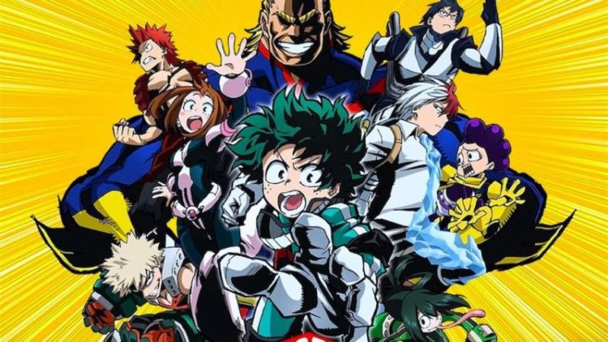

História
Boku no Hero Academia (僕(ぼく)のヒーローアカデミア, Boku no Hīrō Akademia?, lit. "Minha Academia de Heróis"), também conhecido como My Hero Academia no ocidente, é uma série de mangá escrita e ilustrada por Kōhei Horikoshi. Os capítulos do mangá são publicados na revista Weekly Shōnen Jump desde julho de 2014, e até o momento, foram compilados em 22 volumes em formato tankōbon pela editora Shueisha. A série é licenciada e publicada no Brasil pela editora JBC e em Portugal pela Editora Devir.
Em um mundo onde 80% da população possui algum poder sobre-humano, ou "dons", conhecidos como individualidades, o garoto Midoriya Izuku teve a infelicidade de nascer sem nenhum. Nesse mundo fictício, desde o primeiro caso constatado de um recém nascido com algum tipo de poder, o índice de criminalidade cresceu proporcional ao surgimento de heróis com as mais variadas capacidades. E, como não poderia deixar de ser, o sonho de Izuku é se tornar um super-herói. Isso parecia impossível até o dia que ele ajuda o poderoso All-Might na captura de um vilão gosmento. All-Might, vendo que Izuku tem a atitude e o coração de um verdadeiro herói, mesmo sem possuir qualquer poder, resolve passá-lo seus poderes, a fim de torná-lo seu sucessor como o símbolo da paz. E assim Izuku vai à uma escola para heróis em formação.
Temporadas
- 1ª Temporada:13 episódios
- 2ª Temporada:25 episódios
- 3ª Temporada:24 episódios
Cada episódio tem duração de 24 minutos
Cada episódio tem duração de 24 minutos
Personagens
